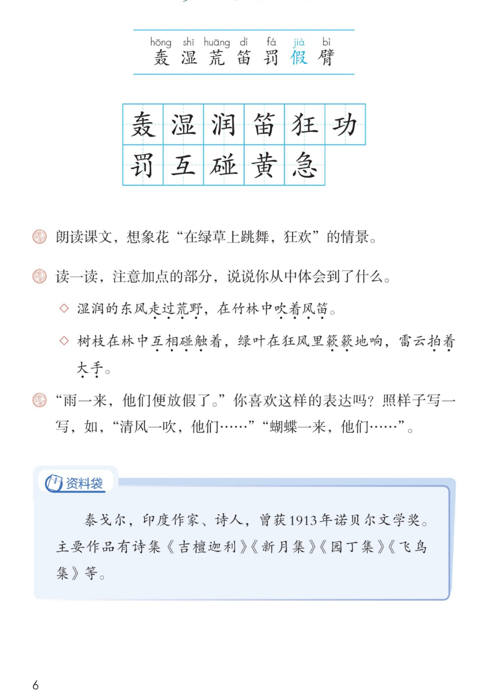

×
🔊 手机听不到声音怎么办？
① 先把手机
媒体音量调大 ，确认没开静音、没连蓝牙耳机；在微信里打开的，点右上角「⋯ → 用浏览器打开」。
② 还是没声音？到应用商店免费下载
Microsoft Edge 浏览器 （它自带朗读发声），用它打开本页面就能出声。
③ 换了 Edge 仍然没声音，说明这部手机的
硬件/系统不支持 网页朗读（多为老旧机型）；近几年买的新手机一般都能正常播放。
→ 打开声音自检
📖 第 2 课《花的学校》· 有声图文带读
统编版语文 · 第一单元·阅读 · 课本 P5~6 · 作者：[印度]泰戈尔 译者：郑振铎 · 素养升级版（对标 2022 课标第二学段）
课文 9 个自然段
素养目标 4
会认字 7
会写字 11
听写词 12
近义词 4 组
深入理解 8 题
本课本领 关注新鲜感·想象画面
🎧 五步学（可随时点任意一句、一个字、一个词单独听）： ① 听读课文 ——一句一句读，读到哪一句哪一句发光；开「跟读」后读完一句留时间让你自己读。② 学字词 ——7 个会认字、11 个会写字（含书写提示），点一个读一个。③ 词语·听写·造句 ——听写 12 个词（读两遍→你写→报答案→听示范句），再听 4 组近义词辨析。④ 深入理解 ——8 道题（认知 / 理解 / 运用 / 拓展），开放题答案不唯一，先想后看。⑤ 花的学校奇妙在哪儿 ——按先后顺序听一听，再听朗读者分段朗读。🌟 先看好「素养目标」和本单元语文要素，再开始五步学；遇到不认识的字，用部首或音序查字典（第二学段要求有初步独立识字能力）。
📌 本单元语文要素 ——阅读：关注有新鲜感的词语和句子 ；习作：体会习作的乐趣 。
🀄 文化自信
🀄 文化自信
感受散文诗里孩子对自然、对母亲的挚爱，体会童真童趣的世界之美。
🗣 语言运用
🗣 语言运用
认识 7 个生字、会写 11 个字；积累“走过荒野、吹着风笛”等有新鲜感的词句并尝试运用。
💡 思维能力
💡 思维能力
一边读一边想象花“在绿草上跳舞、狂欢”的画面，发展形象思维。
🎨 审美创造
🎨 审美创造
体会拟人、排比、色彩描写的生动优美，能有感情地朗读这首散文诗。
点段前的 ①②③ 听整段
🔁 跟读模式：关
👁 隐藏注音（自测用）
字卡上的拼音标的是本课要认、要写的字，读音来自课本生字表
🎤 朗读要求（老师标准） 不添字、不漏字、不回读 ；句号停得长一点 ；想象画面 ，想象花在绿草上跳舞、狂欢；童真、喜爱 的语气。
🤫 默读小提示（第二学段要求：初步学会默读） 听读 ——点句子听老师读；第二步 默读 ——不出声、不指读，边读边想画面；第三步 朗读 ——读出童真、喜爱的语气。
①
当雷云在天上轰响，六月的阵雨落下的时候，湿润的东风走过荒野，在竹林中吹着风笛。
📌 这一段讲：雷雨将至，湿润的东风吹过荒野竹林（夏天阵雨前的景象）。
②
于是，一群一群的花从无人知道的地方突然跑出来，在绿草上跳舞，狂欢。
📌 这一段讲：花从地下跑出来，在绿草上跳舞、狂欢。
③
妈妈，我真的觉得那些花朵是在地下的学校里上学。
📌 这一段讲：孩子想象花是在地下的学校里上学的。
④
他们关了门做功课。
如果他们想在放学以前出来游戏，他们的老师是要罚他们的。
📌 这一段讲：花孩子们关着门做功课，要是放学出来玩会被老师罚。
⑤
雨一来，他们便放假了。
📌 这一段讲：雨一来，花孩子们就放假了。
⑥
树枝在林中互相碰触着，绿叶在狂风里簌簌地响，雷云拍着大手。
这时，花孩子们便穿了紫的、黄的、白的衣裳，冲了出来。
📌 这一段讲：风雨中，花孩子们穿着彩色衣裳冲了出来。
⑦
你可知道，妈妈，他们的家是在天上，在星星所住的地方。
📌 这一段讲：孩子的猜想：花的家在天上，在星星住的地方。
⑧
你没有看见他们怎样地急着要到那儿去吗？
你不知道他们为什么那样急急忙忙吗？
📌 这一段讲：花孩子们急急忙忙，要去天上的家。
⑨
我自然能够猜得出他们是对谁扬起双臂来，他们也有他们的妈妈，就像我有我自己的妈妈一样。
📌 这一段讲：花孩子们扬起双臂奔向妈妈，因为他们也有妈妈。
🤔 想一想（点我可跳过）
点一张图，听读整页

第 6 页 · 课后练习
📖 人教版《语文》三年级上册 · 课本第 5、6 页 · 图片仅供个人学习，版权归人民教育出版社所有
📚 资料袋 · 泰戈尔 1913 年诺贝尔文学奖 。主要作品有诗集《吉檀迦利》《新月集》《园丁集》《飞鸟集》等。
点一个字，听读音、词语和在课文里的句子
结构、部首、笔画与书写提示为通用规范，供参考，以教材和老师的指导为准
轰hōng
轰响
21 画 · 上下（车）
三个车字叠起来，上下对正，中间车略小。
湿shī
湿润
12 画 · 左右（氵）
三点水写窄，右边显字撇捺舒展。
润rùn
湿润
10 画 · 左右（氵）
三点水写窄，右边闰字门字框方正。
笛dí
风笛
11 画 · 上下（竹）
竹字头写扁，下面由字竖要直。
狂kuáng
狂风
7 画 · 左右（犭）
反犬旁写窄，右边王字横画匀。
功gōng
功课
5 画 · 左右（力）
左工右力，工字横变提，力字撇舒展。
罚fá
惩罚
9 画 · 上下（罒）
上部罒写扁，下面部分摆稳。
互hù
互相
4 画 · 独体（一）
横平竖直，中间部分写匀。
碰pèng
碰撞
13 画 · 左右（石）
石字旁写小，右边亚字写稳。
黄huáng
金黄
11 画 · 上中下（黄）
上中下三部分对正，中间由字写正。
急jí
急忙
9 画 · 上下（心）
上边写紧凑，心字底托住。
点一行，听读这一组词语
轰 轰响 轰隆 轰动
湿 湿润 潮湿 湿透
荒 荒野 荒凉 荒地
碰 碰触 碰撞 碰到
读两遍 → 你在纸上写 → 报答案 → 听示范句
准备听写 · 共 12 个词
○ ○ ○
点下面的「开始听写」，听到一个词就写一个词。
▶ 开始听写
🔁 再读一遍
👁 看答案
点词听读，点句子听示范句，再自己说一句
1 轰响 会写字
示范句：雷云在天上轰响。
✏️ 我也能说：什么在天上轰响。
2 潮湿 会写字
示范句：下雨后，空气很潮湿。
✏️ 我也能说：什么地方很潮湿。
3 湿润 会写字
示范句：湿润的东风吹过竹林。
✏️ 我也能说：什么很湿润。
4 竹笛 会写字
示范句：他吹起一支竹笛。
✏️ 我也能说：谁吹什么。
5 狂风 会写字
示范句：绿叶在狂风里簌簌地响。
✏️ 我也能说：什么在狂风里响。
6 功课 会写字
示范句：花孩子们关了门做功课。
✏️ 我也能说：谁做什么功课。
7 惩罚 会写字
示范句：不守纪律会被惩罚。
✏️ 我也能说：谁会被惩罚。
8 互相 会写字
示范句：同学们互相帮助。
✏️ 我也能说：谁互相做什么。
9 碰撞 会写字
示范句：树枝互相碰撞着。
✏️ 我也能说：什么互相碰撞。
10 金黄 会写字
示范句：稻田里一片金黄。
✏️ 我也能说：什么一片金黄。
11 急忙 会写字
示范句：他急急忙忙跑进教室。
✏️ 我也能说：谁急急忙忙做什么。
12 急急忙忙 会写字
示范句：花孩子们急急忙忙要去天上的家。
✏️ 我也能说：谁急急忙忙去做什么。
相同点 / 不一样在哪 / 各造一句
突然 — 忽然
相同：都表示事情发生得很快、没想到。
不一样：突然 更强调出人意料；忽然 更口语、侧重时间短。
突然：一群一群的花突然跑出来。
碰触 — 碰撞
相同：都有物体相碰的意思。
不一样：碰触 更轻、更柔和（树枝互相碰触）；碰撞 更用力（两个球碰撞）。
碰触：树枝在林中互相碰触着。
急急忙忙 — 匆匆忙忙
相同：都表示很急、动作快。
不一样：急急忙忙 更强调心里着急；匆匆忙忙 更强调动作匆忙。
急急忙忙：他们为什么那样急急忙忙。
觉得 — 认为
相同：都表示心里有某种看法。
不一样：觉得 更口语、偏感觉；认为 更正式、偏判断。
觉得：我真的觉得那些花朵在地下上学。
拟人·动词 走过荒野 吹着风笛 互相碰触 拍着大手
排比·色彩 紫的、黄的、白的（三个色彩连说，写出花的多彩）
叠词 一群一群 急急忙忙（课文里的叠词，读来有节奏）
想象·问句 你没有看见…吗？ 你不知道…吗？（两个问句连说，写出急切）
点一张卡，听读这一组
什么叫“有新鲜感”？一是表层 ：陌生的词语、特别的句式，积累丰富表达；二是深层 ：新鲜的视角与内容。下面从课文里找一找。
🔤 新鲜词语·自然
雷云、荒野、风笛、簌簌——平时不常用的词，读起来觉得新鲜。
🌿 新鲜词语·拟人动作
走过荒野、吹着风笛、互相碰触、拍着大手——把风雨当成人来写。
🎨 新鲜词语·色彩
紫的、黄的、白的——三个色彩连着说，写出花孩子的多彩衣裳。
🔁 新鲜句式·拟人
雨一来，他们便放假了——把花开放写成孩子放假，充满想象。
💭 想象画面
读“花在绿草上跳舞，狂欢”，你的脑海里出现了什么画面？（对接课后题1）
✏️ 圈画交流
在课文里画出你觉得新鲜的词句，和小伙伴说说为什么新鲜。🌈 答案不唯一。
📝 试着用一用
用“__一来，他们便__了”写一句话，如“清风一吹，他们便跳起舞来”。（对接课后题3）
标「答案不唯一」的题，说得有道理都对
认知 课文里的“花的学校”在哪里？看解析
🤔 想一想
解析：
花的学校在地下——课文里说“那些花朵是在地下的学校里上学”。
🌈 答案不唯一，说得有道理都对
认知 花孩子们什么时候“放假”？看解析
🤔 想一想
解析：
雨一来，他们便放假了——雨水一来，花就开放了，像孩子放学放假一样。
🌈 答案不唯一，说得有道理都对
理解 课文把“东风、树枝、雷云”当成人来写（走过荒野、互相碰触、拍着大手），这样写有什么好处？看解析
🤔 想一想
解析：
这是把事物当人来写，叫拟人。这样写让风雨有了动作和神情，生动有趣，让我们好像真的看到了夏雨来临的画面。
🌈 答案不唯一，说得有道理都对
理解 “雨一来，他们便放假了”这句话是什么意思？表达了什么？看解析
🤔 想一想
解析：
意思是雨水一来，花就开放了；作者把花开放写成孩子放假，充满童趣和想象，表达了对花孩子的喜爱。
🌈 答案不唯一，说得有道理都对
理解 读课文时，你觉得哪些词句有“新鲜感”？（课后题1）看解析
🤔 想一想
解析：
比如“地下的学校”“走过荒野”“吹着风笛”“紫的、黄的、白的衣裳”等，这些词句让我们好像看到了花孩子的世界。🌈 答案不唯一，说出你喜欢的词句和理由就很好。
🌈 答案不唯一，说得有道理都对
运用 照样子写一写：“雨一来，他们便放假了。”清风一吹，他们……；蝴蝶一来，他们……。（课后题3）看解析
🤔 想一想
解析：
示范：清风一吹，他们便跳起舞来。蝴蝶一来，他们便笑开了脸。🌈 答案不唯一，用上“__一来，他们便__了”的句式写清楚就很好。
🌈 答案不唯一，说得有道理都对
运用 用“一群一群”或“急急忙忙”说一句话。看解析
🤔 想一想
解析：
示范：一群一群的蜜蜂飞向花丛。他急急忙忙跑进教室。🌈 答案不唯一，把词语用对、说清楚就行。
🌈 答案不唯一，说得有道理都对
拓展 你还知道泰戈尔的其他作品吗？或者，如果你是一朵花，你想到哪里去？看解析
🤔 想一想
解析：
思路一：我知道《新月集》《飞鸟集》（资料袋里有）。思路二：如果我是一朵花，我想去山坡上和蝴蝶玩耍。🌈 答案不唯一，说得有道理都对。
🌈 答案不唯一，说得有道理都对
💬 介绍支架：先 在地下上学 → 再 关门做功课 → 接着 雨来就放假 → 然后 家在天上 → 最后 扬臂奔妈妈。
点一位朗读者，听他（她）读的这一段
📖 朗读者·雷雨前
当雷云在天上轰响，六月的阵雨落下的时候，湿润的东风走过荒野，在竹林中吹着风笛。 / 于是，一群一群的花从无人知道的地方突然跑出来，在绿草上跳舞，狂欢。 / 妈妈，我真的觉得那些花朵是在地下的学校里上学。
💬 要读得清楚、有感情 ，像在朗读一首散文诗，读出童真和想象
📖 朗读者·地下学校
他们关了门做功课。 / 如果他们想在放学以前出来游戏，他们的老师是要罚他们的。 / 雨一来，他们便放假了。
💬 要读得清楚、有感情 ，像在朗读一首散文诗，读出童真和想象
📖 朗读者·风雨冲出
树枝在林中互相碰触着，绿叶在狂风里簌簌地响，雷云拍着大手。 / 这时，花孩子们便穿了紫的、黄的、白的衣裳，冲了出来。
💬 要读得清楚、有感情 ，像在朗读一首散文诗，读出童真和想象
📖 朗读者·天上家
你可知道，妈妈，他们的家是在天上，在星星所住的地方。 / 你没有看见他们怎样地急着要到那儿去吗？ / 你不知道他们为什么那样急急忙忙吗？
💬 要读得清楚、有感情 ，像在朗读一首散文诗，读出童真和想象
📖 朗读者·奔妈妈
我自然能够猜得出他们是对谁扬起双臂来，他们也有他们的妈妈，就像我有我自己的妈妈一样。
💬 要读得清楚、有感情 ，像在朗读一首散文诗，读出童真和想象
每题给自己打 1~3 颗星
1. 我能正确认读本课 7 个会认字。 ☆ ☆ ☆
2. 我能规范书写 11 个会写字（注意书写提示）。 ☆ ☆ ☆
3. 我能找出课文里有新鲜感的词句，并说出理由。 ☆ ☆ ☆
4. 我能边读边想象花跳舞、狂欢的画面。 ☆ ☆ ☆
5. 我能有感情地朗读，读出童真和想象。 ☆ ☆ ☆
✍️ 小练笔 （为单元习作《猜猜他是谁》做准备）：有新鲜感的词句 ，写写你看到的花或自然景象（也可仿写“__一来，他们便__了”）。例 ：下雨了，雨一来 ，路边的小花便仰起脸，喝饱了水，跳起舞来 。